満願寺/千葉県銚子市
銚子といえば醤油と鰯と犬吠埼。
スペイン風の駅舎が鉄道マニアに人気の銚子電鉄、犬吠駅からファンシーな駅舎には似つかわしくないお寺が見える。
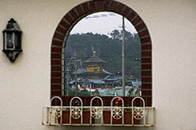
板東二十七番飯沼観音圓福寺奥の院満願寺である。
遠目に見てもあきらかに妙なカタチのお寺だ。
中央に金色の塔屋のようなものが見える。まるで安土城のようではないか。
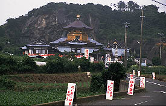 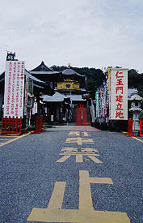
満願寺までのアプローチには数メートル間隔で「駐車禁止」「めいわく駐車お断り」の看板が並べられている。
とどめは境内に入る直前のデカい「駐車禁止」。
このお寺、駐車場がいっぱいになる程、人気なんだろうか？
ちなみに私が訪れた日は梅雨の中休みの平日。参拝客は3〜４人位だったようです。
建物を見る限り、かなり新しそうなお寺である。
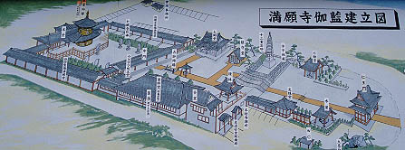
で、境内の案内板。
右手の仁王門だけがまだ建てられておらず、資金募集の看板などもある。
注目すべきは図中、一番左の例の六角塔。遠くからもかなり目立っていた、あの金色の塔である。
説明に寄ると何とさざえ堂形式としてあるではないか！
おおお、さざえ堂、現代に復活！か？
焦る気持ちを押さえつつ境内を進む。
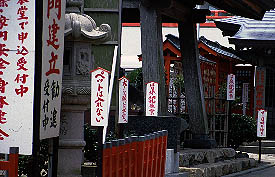
やけに注意書きの多いところである。
このような不粋な看板が林立する雰囲気、ワタシ的には大好きなので大変結構である。
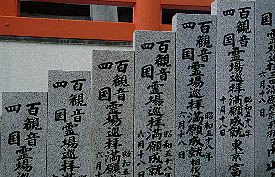
階段の脇に並んでいる石碑。四国百観音霊場巡拝満願成就としてある。
ここは板東二十七番の奥の院という顔とは別に四国八十八ケ所と西国、板東、秩父の百観音合計188カ所を全部参拝した人が記念に訪れる寺のようだ。名前も満願寺だし。
別に必ず行かなければならない訳ではないが、ちと下世話な見方をすれば商売のコンセプトとしては上手いと思う。
188カ所を苦労して巡礼した人達はある意味、次の目的を失って、いわば燃え尽きてしまう。
そこにこのような寺があったら・・・
取り敢えず行っちゃうでしょう。
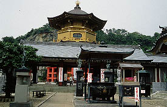 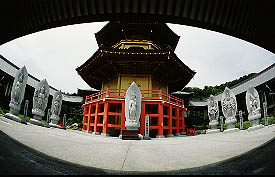
さて、水子地蔵や大師堂、お砂踏み、七福神などをお参りしながらお目当てのさざえ堂に近付く。
ここは前が中門、左手が四国霊場本尊奉安満願堂、正面奥が本堂、右手が百観音霊場本尊奉安満願堂という建物が合体した、口の字型の建物となっている。
その中庭の奥に「さざえ堂」は建っている。
一番奥の本堂にくっ付いており、本堂の向拝という事になっている。
しかしこれは明らかに別の独立した建物が本堂の前を塞いでいるような感じである。ただし入口は中にはなく、左手の建物を経由して奥の本堂から入るようになっている。
懸け造り風の赤い廻縁の中にも部屋があるので三層塔といえよう。
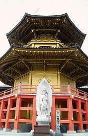
早速、中門の左手から建物に入ってみる。
いきなりお遍路さんの格好をしたマネキン人形2体がお出迎え。
「巡礼の会」入会案内だって。
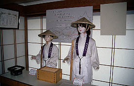  で、第1コーナーの閻魔様を過ぎるとガラスケースに四国八十八カ所の木像レプリカが納まる巡礼堂。
巡礼した時の事を思い出しながら追体験するという趣向であろう。
もちろん巡礼をした事が無い人にとってはバーチャル巡礼体験となるのであろう。
もちろん巡礼したことのないワタシ、取り敢えず行った事のある石手寺のレプリカなんぞを拝みつつ、ゆるいスロープを登っていく。
天井から吊るされた灯籠や写し本尊はもちろん皆様からの寄付。それぞれに寄進した人の名前が書いてある。
で、本堂。
残念ながら本堂内は撮影禁止だったので様子を説明しておくと、中央には4メートル位の観音像が本尊として祀られている。昭和49年の作との事である。
格天井の一枚一枚には花の絵と共に百観音の絵が描かれている。
何よりも印象的だったのがお守りなどが販売されているコーナーにずらりと並んでいた全国各地の霊場案内本。
日本にこんなに巡礼霊場があるとは知らなかった。
で、第1コーナーの閻魔様を過ぎるとガラスケースに四国八十八カ所の木像レプリカが納まる巡礼堂。
巡礼した時の事を思い出しながら追体験するという趣向であろう。
もちろん巡礼をした事が無い人にとってはバーチャル巡礼体験となるのであろう。
もちろん巡礼したことのないワタシ、取り敢えず行った事のある石手寺のレプリカなんぞを拝みつつ、ゆるいスロープを登っていく。
天井から吊るされた灯籠や写し本尊はもちろん皆様からの寄付。それぞれに寄進した人の名前が書いてある。
で、本堂。
残念ながら本堂内は撮影禁止だったので様子を説明しておくと、中央には4メートル位の観音像が本尊として祀られている。昭和49年の作との事である。
格天井の一枚一枚には花の絵と共に百観音の絵が描かれている。
何よりも印象的だったのがお守りなどが販売されているコーナーにずらりと並んでいた全国各地の霊場案内本。
日本にこんなに巡礼霊場があるとは知らなかった。
で、いよいよさざえ堂である。ここでは開山大塔と呼ばれている。
中に入るとまず目に入るのは中央の吹き抜けの物凄いゴージャスな木の華。
そして最上部には釈迦三尊像、最下層には虚空菩薩像が安置されており金ピカの筒が並んでいて豪華絢爛な雰囲気ではある。
しかし！
散々引っ張っておいてナンだが、内部の参拝ルートは中央に手摺があるだけの単螺旋の階段で、さざえ堂マニアを自称するワタシとしてはこれをさざえ堂と呼ぶのはあまりにも苦しい。
巡礼集大成のこのお寺がさざえ堂を称したい気持ちも判るのだが、さざえ堂形式と自称するならせめて二重螺旋にして欲しかったっす。いや、手摺で行きと帰りを分けてあるのは痛い程判るんですけど・・・
 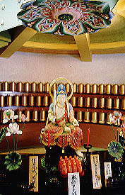
内部はかなりゴージャスで楽しめるところだったのだが、私自身が下手にさざえ堂を期待してしまったゆえの膝カックン状態。アタシが悪いんです、ハイ。
でも、さざえ堂を期待しながら心の隅では「多分、こんなんだろうなあ〜」と想像していた通りの建物だっただけにショックは少なかったと言うか・・・
本堂右手の百観音霊場本尊奉安満願堂の観音像もそこそこに最初の中門に出て帰ろうとしたその時、こんな絵が飾られているのを見てしまった。
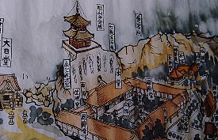
むむむ・・・・・・これは何だ？
画面下の口の字の建物が今、一周してきたところだ。その本堂の後ろに開山多宝塔なるものが建っているじゃあーりませんか。
しかも
本堂の後ろの崖に穴が空いていて太鼓橋が架けてあるぞ。
えっ、ということは多宝塔に行くのには本堂後ろの太鼓橋を渡って、地中に通路を掘って崖の上まで行く作戦だったのか？見れば、崖には虚空蔵霊窟というカッコ良すぎるタイトルまで付いている、ということはただのトンネルではなく、仏像が並ぶ地中回廊のようなモノなのだろうか。
もし現実にこんなモノがあったら凄すぎるぞ。
この絵が描かれた時期は失念したが平成の初期か昭和の末期だったと思う。
その頃はこんな凄い計画をたてていたのだろうか。
現在本堂の前に建っている開山大塔は上図の開山多宝塔の代わりに建てられたものであろう。
開山大塔が本堂を塞ぐようにつくられたのもいわば無理矢理現在の位置に作ってしまったものなのではないか。
では、何故開山多宝塔計画が中止となり開山大塔が建てられたのか。
資金不足だったのか崖の地質が弱かったのか用地取得の失敗か。
いずれにしても入口の仁王門の建設によって境内の建築は全部完了するとの事なので、この先開山多宝塔が崖の上に建てられる事はあるまい。
ああ、見たかったなあ、地中回廊経由の崖の上の開山多宝塔。
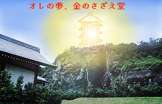 ←で、想像図。
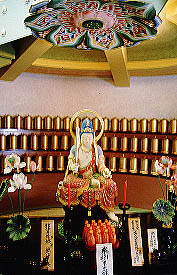
内部はかなりゴージャスで楽しめるところだったのだが、私自身が下手にさざえ堂を期待してしまったゆえの膝カックン状態。アタシが悪いんです、ハイ。
でも、さざえ堂を期待しながら心の隅では「多分、こんなんだろうなあ〜」と想像していた通りの建物だっただけにショックは少なかったと言うか・・・
本堂右手の百観音霊場本尊奉安満願堂の観音像もそこそこに最初の中門に出て帰ろうとしたその時、こんな絵が飾られているのを見てしまった。
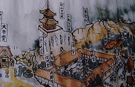
むむむ・・・・・・これは何だ？
画面下の口の字の建物が今、一周してきたところだ。その本堂の後ろに開山多宝塔なるものが建っているじゃあーりませんか。
しかも
本堂の後ろの崖に穴が空いていて太鼓橋が架けてあるぞ。
えっ、ということは多宝塔に行くのには本堂後ろの太鼓橋を渡って、地中に通路を掘って崖の上まで行く作戦だったのか？見れば、崖には虚空蔵霊窟というカッコ良すぎるタイトルまで付いている、ということはただのトンネルではなく、仏像が並ぶ地中回廊のようなモノなのだろうか。
もし現実にこんなモノがあったら凄すぎるぞ。
この絵が描かれた時期は失念したが平成の初期か昭和の末期だったと思う。
その頃はこんな凄い計画をたてていたのだろうか。
現在本堂の前に建っている開山大塔は上図の開山多宝塔の代わりに建てられたものであろう。
開山大塔が本堂を塞ぐようにつくられたのもいわば無理矢理現在の位置に作ってしまったものなのではないか。
では、何故開山多宝塔計画が中止となり開山大塔が建てられたのか。
資金不足だったのか崖の地質が弱かったのか用地取得の失敗か。
いずれにしても入口の仁王門の建設によって境内の建築は全部完了するとの事なので、この先開山多宝塔が崖の上に建てられる事はあるまい。
ああ、見たかったなあ、地中回廊経由の崖の上の開山多宝塔。
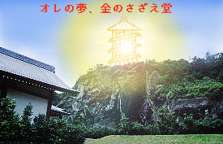 ←で、想像図。
2001.6.
珍寺大道場 HOME